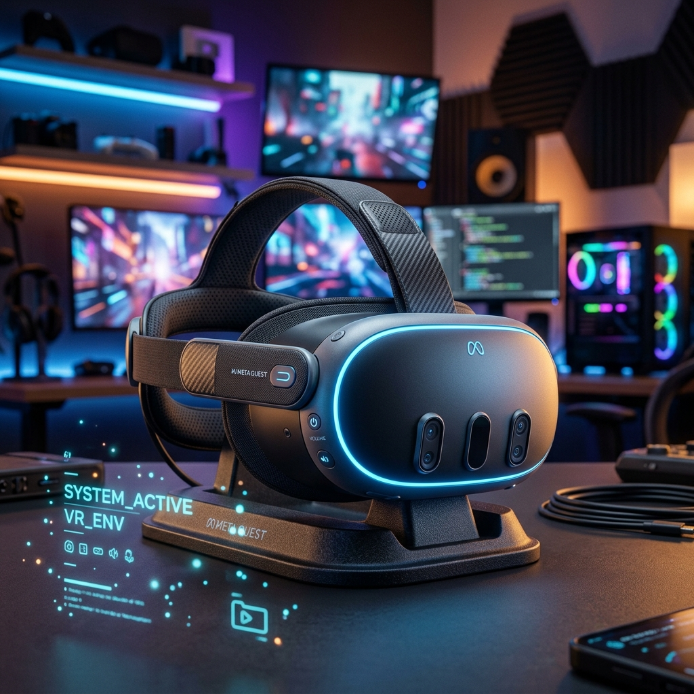

JATIN SUYAL
Experienced Unity Game Developer (4+ Years)
Based in Delhi, I specialize in crafting immersive gaming experiences, pushing the boundaries of creativity and innovation in the Unity ecosystem.
Core_Competency_Telemetry
> INITIALIZING KERNEL...
> LOADING ASSETS/MODELS/V5...
> SHADERS_OPTIMIZED [SUCCESS]
> CONNECTING_TO_UPLINK...
> READY_FOR_INTERACTION
> TRACING_LATENCY: 12ms
> ERROR: NULL_PTR_SUPPRESSED
> CACHE_FLUSHED
> WAITING_FOR_INPUT...

VIRTUAL_REALITY ARCHITECT
Developed a VR onboarding simulator for DSS+ on Oculus Quest 3, training 140,000+ industrial workers in electrical and construction safety.
DECRYPT_DATA_SET arrow_forward_ios
SUPERFUN_CORE
Contributed to the development of Project Superfun, a visually polished AA-level multiplayer game with modular gameplay systems.